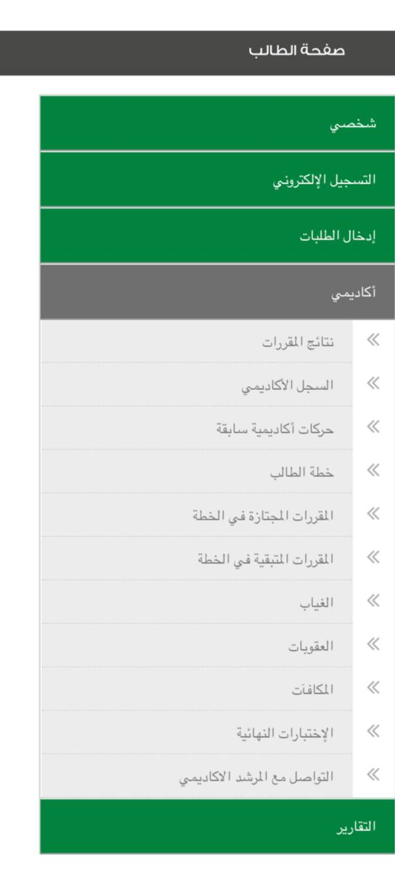

التفاصيل لائحة الدراسة والاختبارات عزيزي الطالب: يجب قراءة دليل الطالب
والقواعد التنفيذية للائحة الدراسة والاختبارات بجامعة تبوك والالتزام بماورد
فيهما، وتتحمل كامل المسؤولية في حال عدم التقيد بما ورد فيهما.
الحرمان بدون عذر عزيزي الطالب: نأمل منك الالتزام بحضور المحاضرات لتفادي
حرمانك في المقرر حيث أن تجاوز نسبة غيابك عن 20بالمئة (بدون عذر) من مجموع
ساعات الاتصال يحرمك من دخول الاختبار النهائي. مما يؤثر على مستواك الدراسي
وبالتالي يؤدي إلى انخفاض معدلك التراكمي.
الحرمان بعذر/بدون عذر عزيزي الطالب: نأمل منك الالتزام بحضور المحاضرات
لتفادي حرمانك في المقرر حيث أن تجاوز نسبة غيابك عن 35 بالمئة (بعذر وبدون
عذر) من مجموع ساعات الاتصال يحرمك من دخول الاختبار النهائي. مما يؤثر على
مستواك الدراسي وبالتالي يؤدي .إلى انخفاض معدلك التراكمي